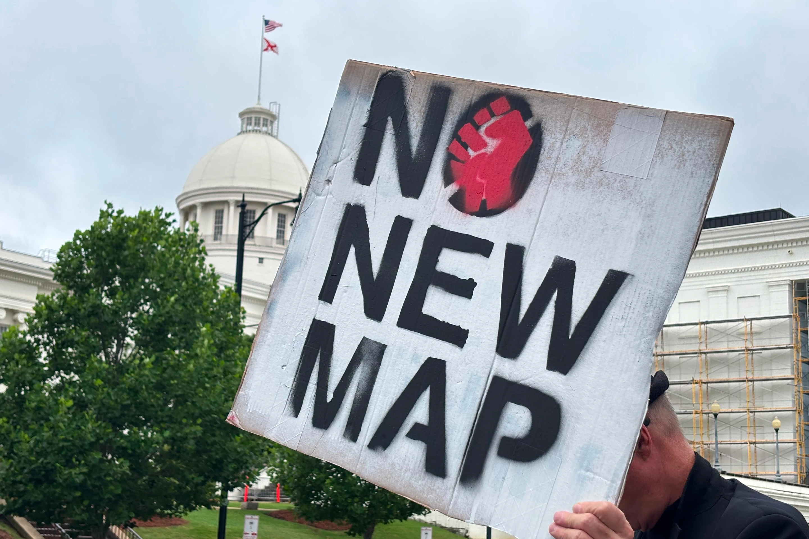

Monday, June 29, 2026
FILE -A demonstrator holds up a sign outside the Alabama Statehouse in Montgomery, Ala., on May, 7 2026.


WASHINGTON — The Supreme Court on Tuesday cleared the way for Alabama to adopt a Republican-favoring congressional map in this year’s elections, overturning a lower court verdict that found the redistricting plan purposefully discriminates against Black people.
The court allowed the state’s emergency appeal to utilize a plan it adopted three years ago that had a majority-Black population in only one of its seven congressional districts. The three liberal justices disagreed.
The high-court ruling is the latest move in a redistricting scramble that is part of a larger effort by President Donald Trump to try to hang on to Republicans’ tiny House majority in the November elections. It comes a day before a critical deadline previously extended by Republican Gov. Kay Ivey in the state’s wish to utilize the map in special primary elections in August.Last week, the day after a three-judge bench rejected the state’s chosen plan, the state’s Republican leaders headed to the Supreme bench.
The lower court ordered Alabama to adopt the same court-drawn map it used in the 2024 elections that sent two Black Democrats to Congress. Two of the state’s seven congressional districts are majority or near majority black.
“The Supreme Court’s decision provides Alabama and others with license to discriminate against Black voters with impunity and without consequence. “The Court’s shameless decision to reinstate an intentionally racially discriminatory map defies any thoughtful or consistent application of the law,” said Deuel Ross, director of litigation for the NAACP Legal Defense Fund Tuesday night.
“The fund will continue to throw all of our resources into the fight to ensure that Alabama voters have the fair representation they deserve,” he stated
Ivey said soon after the court’s decision that the state will utilize the map for four special congressional primaries on Aug. 11.
The U.S. Supreme Court upheld what I have been saying all along and that is Alabama understands our state, our people and our districts best. Today's ruling is a victory for the people of Alabama and our elections." "Alabama is doing our part to keep America strong and I am proud our state continues to fight the fight to ensure activists do not have the last word," stated Ivey.
“I’ll see y’all at the polls August 11!” she said.
The decision is the latest twist in the repercussions from last month’s Supreme Court ruling that effectively threw down a Black-majority district in Louisiana and undermined the federal Voting Rights Act. That verdict has prompted Republicans in several Southern states, including Alabama, to act to redraw voting districts with heavy minority populations that have elected Democrats.
The Alabama instances are some years old. In 2023, a three-judge court determined that a plan prepared by Republican state politicians intentionally weakened the voting power of Black citizens. The court stated the state, which is around 27 percent Black, should have two districts where Black voters constitute the majority or nearly so.
Following the Supreme Court’s Louisiana decision earlier this week, Alabama officials moved swiftly to enact the 2023 state-drawn map. The conservative majority of the Supreme Court voted to dissolve the injunction that had barred the map from taking effect and sent the issue back to the three-judge bench for a new look in light of the Louisiana verdict.
Meanwhile, voters went to the polls for Alabama’s May 19 primaries and Ivey established fresh special August primaries in the districts affected by the map alteration.
After a second review, the judicial panel said it still stood by its original decision that there was “undisputed evidence” of willful racial discrimination.
It said the special congressional primary should occur in the old court-approved districts.
The panel “failed to respect the presumption of legislative good faith,” the high court’s conservative majority noted in an unsigned judgment.
Justice Sonia Sotomayor, dissenting, chided her colleagues for supporting what she said will be “a chaotic election, held under a never-before-used congressional map that intentionally discriminates against Black Alabamians.”
Elected to the U.S. House in 2024 using the court-ordered map. Black Democrat Figures. The order Tuesday lays out a layout that gives the GOP a shot at reclaiming the south Alabama seat.